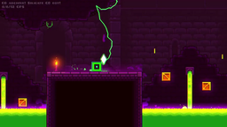
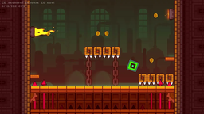
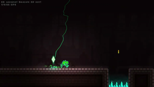
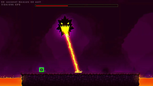

The Tower
| Level (showcase) | Info |
|---|---|
 The Tower by RobTop |
ID: 5001 Difficulty: Normal Moons: 5 Coins: 3 Objects: 9435 Release version: 2.2 Music 1: Desert City by Kevin MacLeod Music 2: Chambers of Hell 2 by Cyberwave Orchestra |
| Level (showcase) | Info |
|---|---|
 The Sewers by RobTop |
ID: 5002 Difficulty: Hard Moons: 6 Coins: 3 Objects: 5867 Release version: 2.2 Music 1: Scheming Weasel by Kevin MacLeod Music 2: Stranding by Sebaravila Music 3: The Secret Cave by Cyberwave Orchestra |
| Level (showcase) | Info |
|---|---|
 The Cellar by RobTop |
ID: 5003 Difficulty: Harder Moons: 7 Coins: 3 Objects: 9025 Release version: 2.2 Music 1: The Secret Cave by Cyberwave Orchestra Music 2: Dungeon 09 by Atlas Reach |
| Level (showcase) | Info |
|---|---|
 The Secret Hollow by RobTop |
ID: 5004 Difficulty: Harder Moons: 7 Coins: 3 Objects: 15593 Release version: 2.2 Music 1: Awakening of Darkness by Daniel Carl Music 2: Casual Game Music 09 by Ostinarium Music 3: The Secret Cave by Cyberwave Orchestra Music 4: Tomb by BoomKitty & Skyth |